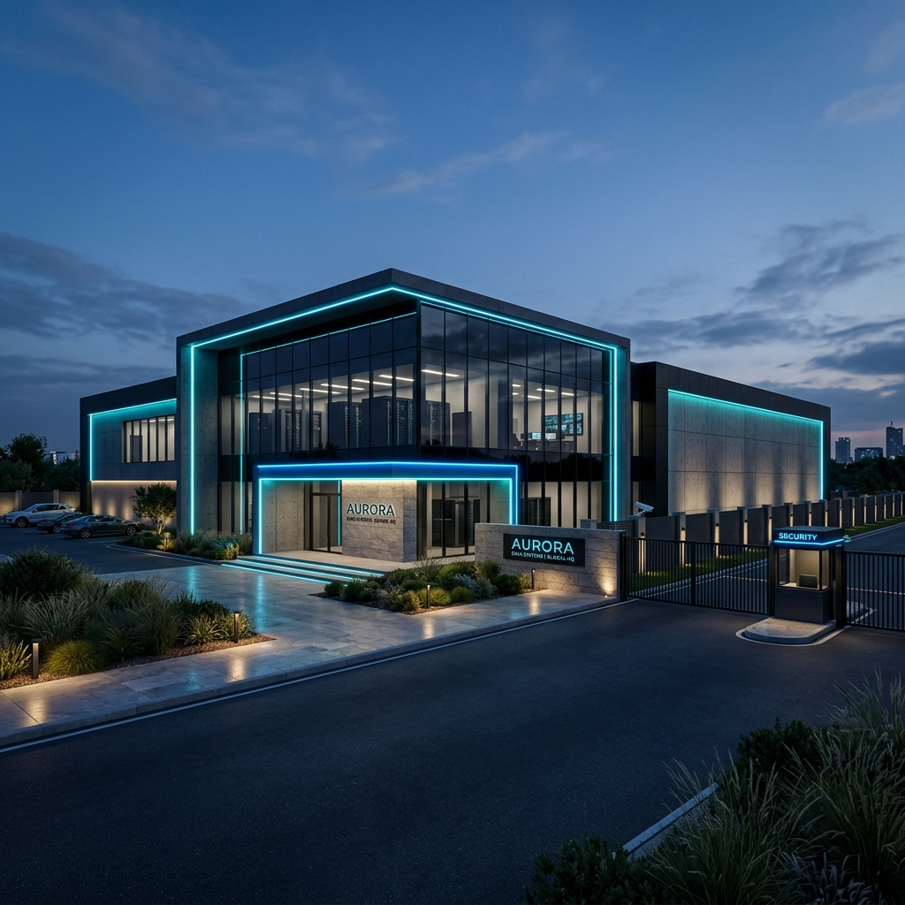

Tier III Data Center Acquisition • Reston, VA (Data Center Alley)

A rare opportunity to acquire an operating, income-producing Tier III-design data center in Northern Virginia—the world's largest and most power-constrained data center market. The facility serves as a mission-critical colocation hub with highly contracted revenue and massive power-expansion upside.
Northern Virginia currently reports just 0.5% colocation vacancy with intense power rationing. This facility uniquely offers an actionable 5 MW power expansion opportunity via an adjacent Dominion Energy substation and an additional 10,000 SF of building expansion capacity.
The facility is currently 97% leased. The anchor tenant is Cloudflare, representing approximately 62% of the stabilized base rent. The anchor contract features a ~3% annual rent escalator and extends through October 2030, with automatic 5-year renewal provisions.
NOI is projected to scale steadily with current occupancy: $750K in 2027, $799K in 2028, and $851K in 2029. Significant owner-operator upside exists by executing the CRAC upgrades and the 200 kW Cloudflare expansion that are already underway.